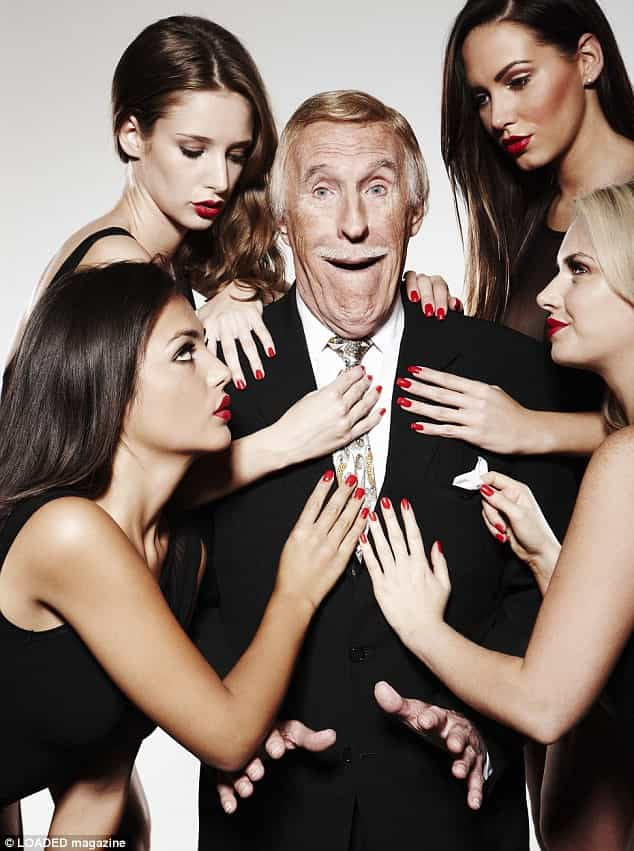

< < < Back
Why Feminists Hate Male Sexuality – Return Of Kings
To decipher the mind of the 21st century feminist is to realize that, at its core, “the sisterhood” does not draw its energy from a place of love and respect for their peers, but rather from a place of hatred and bitterness. The feminist takes to railing furiously against both men and women perceived as having it better than her in the sexual market. Feminism is therefore best characterized by the emotional states that fuel it—envy, greed, and loathing.
One of the key underlying tenets of feminism is disdain for male sexuality and its inability to dance the tune of the “modern, empowered woman” (AKA careerist hag) that he “should” be attracted to. Here’s why this is true:
Male sexuality is unencumbered
Sleeping with many women doesn’t harm a man’s desirability for the worse one iota. If anything it serves as a female accredited stamp of approval which increases his allure to other women. A man bedding 50 previous women will never be the same as a woman taking 50 previous cocks, no matter how much the feminists squeal in anguish.
Age 19 and game-uninitiated, I made the crude observation to a friend that women are like buses. “They all come at once,” I remarked (note: if your women are like buses in the big-boned sense then please, for the love of God, learn some self-respect). Back on point and of no coincidence, what I’d actually harnessed was the power of pre-selection and social proof.
Having first attracted one girl from my college major course, two others became far more overt in their signals of interest toward me having learned of my association with the initial girl. When the literature of game’s heavyweights came my way, this experience amongst others made for an excellent reference point in understanding the machinations of attraction.
The enraged sex-difference-denier will bludgeon us with social justice-inspired rants but, as we know, pre-selection simply does not work in reverse. The luxury of consequence-free sexual largesse lies squarely in the male corner because we do not suffer the same sexual market value (SMV) erosion and emotional torment of similarly promiscuous women.
For 99.999% of human history chasteness has been a paramount quality in female mate selection because to wife up a slut was to stare down the very real possibility of unprovable cuckoldry (pre-paternity testing) and ensuing genetic obliteration. No matter how many male feminists rail that slut-shaming is disgraceful and pre-historic and how many sycophants enter the white-knight lottery to win meager scraps of pussy, the reality is that men still prefer chaste women in every context other than the most sordid and degrading pump-and-dump opportunities.
Feminists are by-and-large enraged by this perceived inequality because uglier girls depend on their sexual “attainability” to compete with their more beautiful counterparts. Naturally they hate being branded sluts for it because they don’t want to be reprimanded or reminded of their low value.
Male sexuality stands up better to the test of time
You used to get it in your fishnets,
Now you only get it in your night dress
-Alex Turner
For a man who keeps himself on the right trajectory of increasing social savviness (game), status, and economic prosperity, the chances are high that his 40-year-old self will punch above his 20-year-old self in the dating market. That is to say, when weighting male characteristics with their influence on attractiveness, male aging often brings conspicuous improvements in a man’s ability to satisfy female hypergamy in both alpha (fux) and beta (bux) dimensions.

Feminists are particularly taken to obsessive credential-whoring because they see personal achievements as a means of recourse against nature’s SMV lottery. These pursuits help to patch her fragile self-esteem and provide a means of competing with more beautiful women on her own terms.
Much to the chagrin of these types, personal development is nowhere near as great a factor in male attraction as it is in female attraction. No matter how many liberal arts degrees she frames and hangs on her wall, she will likely never imitate the loin-inspiring grip of that initial post-pubescent flourish of youthful exuberance and unsullied beauty sported by her much-loathed rivals.
Interestingly, this particular quirk of the feminist mind stems from the tendency to conflate personal value with sexual value. Unfortunately no matter how many Buzzfeed articles she ingests about the “differences between real women and little girls,” her “womanly” self is not the stimulant of alpha male attention she prayed it would be.
Our immutable friend biology again has the final world in explaining the difference in the trajectory of male vs. female sexual value with age. By 39 a woman’s fertility is barely half what it was just eight years prior, and the odds are against conceiving within a year (44% chance). Men, on the other hand, have been documented fathering children well into old age.
Male sexuality is visual and therefore wholesome in its simplicity
No, your college diplomas do not elicit erections. No, your mundane career does not compensate for the ravages of time on your appearance. Youthful symmetry and slender, supple flesh are the irrepressible rallying cry for boners the world over. Feminists hate this because it provides compelling evidence that men and women are fundamentally different.
Horrified by this reality, the feminist seeks to redefine what is “truly” attractive to better match her own attributes. This commonly manifests itself in the belief that intelligence should count for more than looks and femininity in the dating market. Except, of course, it doesn’t!
At some level of consciousness women fundamentally acknowledge the reality of attraction. However, and this tends to be evidenced in things as far-flung as the pay gap lie and the virtual male monopoly on greatness and ingenuity. Hard work and the single-minded pursuit of personal development simply produce higher returns for men in attracting quality mates. A woman’s sexual value always has and always will reside primarily in her looks.
The Lowdown
Unfortunately, comrades, as I wrap up this piece it would be amiss not to say that men with our spirit and resolve to call out bullshit where we see it are rapidly dwindling in number. We live in a world where feminists are championed for their greed and loathing. Even when her campaign of hate is transparent, the rapturous applause will ring out from legions of sexually starved sycophant betas and her fat, ugly sisters.
We live in upside-down times where normal, healthy women are skinny-shamed for the entertainment of 6 figure baying crowds; where global brands guarantee good publicity by piggybacking the irreproachable feminist narrative that “real” beauty is different from what our 10 million year old human instinct tells us; and where women are cheered on for exhibiting ugly and selfish traits that our forefathers would have universally condemned.
I for one will delight in gleefully reminding the feminist-inclined amongst us that, as much as they’d like to, they cannot change natural, evolved male sexuality. The feminist employs a thin veneer of credibility but ultimately does not seek to empower women at large, but rather to tear down her rivals (most commonly other women) to install herself as the de-facto leader in a new and altogether twisted dating paradigm.
Natural male sexuality is the last bastion standing in the path of these attempts. Feminists unsurprisingly therefore hate the male sex drive because it dances to its own tune, impervious to their attempts at shaming and ridicule.
Read More: Feminists Attack Lincoln University President For Saying Women Should Be Responsible For Their Actions


{kind=link}
{kind=link}
{kind=link}
{kind=link}